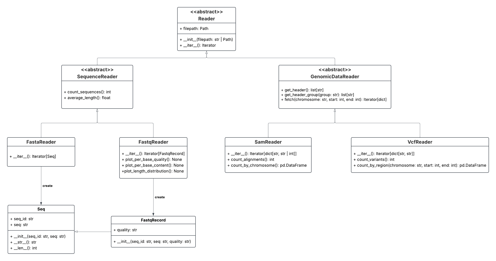

Обзор проекта¶
BioFormat Toolkit — набор инструментов на Python для чтения и анализа биоинформатических файлов форматов FASTA, FASTQ, SAM и VCF.
Проект использует объектно-ориентированный подход. Классы для чтения файлов организованы в иерархию, а общая функциональность вынесена в родительские классы.
Архитектура классов¶
На UML-диаграмме показаны отношения наследования между читателями разных форматов, а также связи классов записей последовательностей.


UML-диаграмма архитектуры BioFormat Toolkit.¶
Поддерживаемые форматы¶
FASTA¶
FASTA используется для хранения биологических последовательностей с идентификаторами.
Класс FastaReader читает записи FASTA и создаёт объекты Seq.
Поддерживается чтение последовательностей, занимающих несколько строк.
Для анализа последовательностей доступны подсчёт количества записей и вычисление средней длины.
FASTQ¶
FASTQ содержит биологические последовательности и соответствующие им значения качества секвенирования.
Класс FastqReader читает записи FASTQ и создаёт объекты
FastqRecord. Каждая запись хранит идентификатор, последовательность
и строку качества.
Также FastqReader позволяет строить три графика:
качество секвенирования по позициям;
содержание нуклеотидов по позициям;
распределение длин последовательностей.
SAM¶
SAM хранит данные о выравнивании прочтений на референсные последовательности.
Класс SamReader предоставляет чтение записей и заголовков,
получение групп заголовка, подсчёт выравниваний, статистику
по хромосомам и поиск выравниваний в заданном геномном интервале.
VCF¶
VCF используется для представления геномных вариантов.
Класс VcfReader читает заголовки и записи о вариантах, позволяет
получать группы метаданных, подсчитывать варианты, получать статистику
по заданному региону и искать варианты в геномном интервале.
Общие принципы¶
Классы чтения файлов наследуются от общих родительских классов.
Для последовательной обработки записей используются итераторы и генераторы.
Общие методы подсчёта последовательностей и средней длины реализованы в
SequenceReader.Для анализа SAM и VCF используются операции работы с геномными интервалами, реализованные в соответствующих классах.
Документация классов и методов формируется на основе docstrings с помощью Sphinx.
Подробнее об интерфейсах и наследовании классов можно прочитать в документе Справочник классов.